SERVICE GUIDE
Welcome to Gumi Glowup
Your AI skincare companion — analyse, recommend, routine, repeat.
01What is Gumi Glowup?
Gumi Glowup is an AI-powered skincare companion. Take a selfie, and our AI scores your skin across five core dimensions, recommends safe and well-matched products, and builds a daily routine that fits your real skin condition.
It's not a one-shot diagnosis. The more you scan, complete routines, and follow recommendations, the more accurately the app learns your skin and tailors what comes next.
02Why it works: data-driven personalisation
Most skincare apps stop at "here's a product list." Gumi Glowup is built around a continuous learning loop:
The Glowup Loop
1. Scan — AI captures your skin's current state (5 metrics + skin age).
2. Recommend — Products are picked based on your skin profile, concerns, allergies, and analysis history.
3. Routine — A personalised AM/PM routine is generated from those products.
4. Track — Daily check-ins and monthly rescans build a longitudinal record.
5. Re-recommend — Future recommendations use everything you've done so far. The longer you use the app, the smarter it gets.
Why this matters
- Your skin changes with seasons, hormones, stress, and the products you use. A static recommendation goes stale fast.
- Effectiveness is measurable. By comparing scans before and after a routine, we can tell you which products actually moved the needle for your skin — not generic reviews.
- Habits beat heroics. Skincare results come from consistent daily care. Streaks, reminders, and AM/PM check-ins are designed to make that easy.
03First launch & sign-up
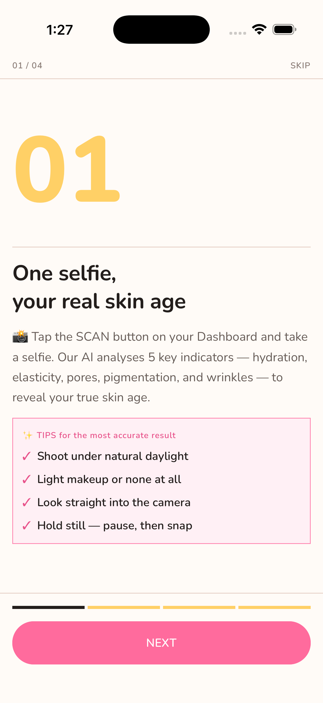
Welcome tutorial: a quick tour of what Gumi Glowup does.
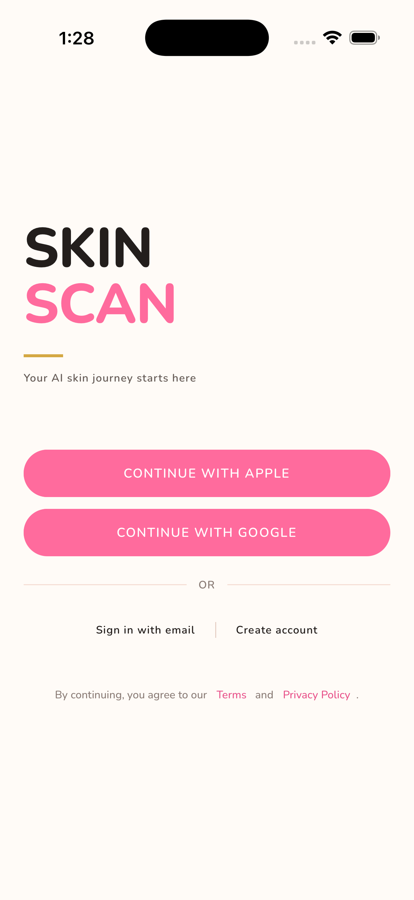
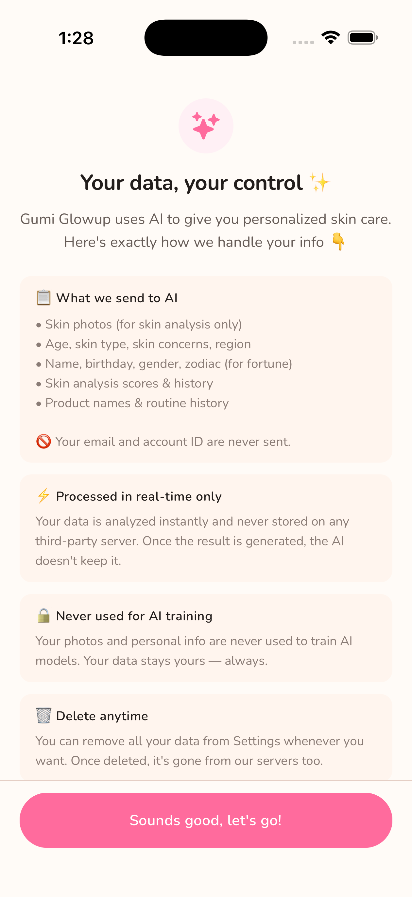
Sign in with Apple or Google, then review and accept the AI processing terms before your first scan.
What you'll set up
- Name — required.
- Birthday — required. Also used to derive your zodiac sign for the daily fortune.
- Skin types — required. Pick 1–3 (dry, oily, combination, sensitive, acne-prone, redness, etc.).
- Gender — optional.
- Region / country — optional. Helps regionalise recommendations.
- Skin concerns — optional. Describe in your own words what bothers you most (up to 200 characters).
- Allergens — optional. Flag ingredients you must avoid — the recommender filters these out automatically.
Why we ask
Every field directly shapes what the AI recommends. The more accurate your profile, the safer and more useful your picks. You can update any of this anytime from Settings → Edit profile.
04Home dashboard
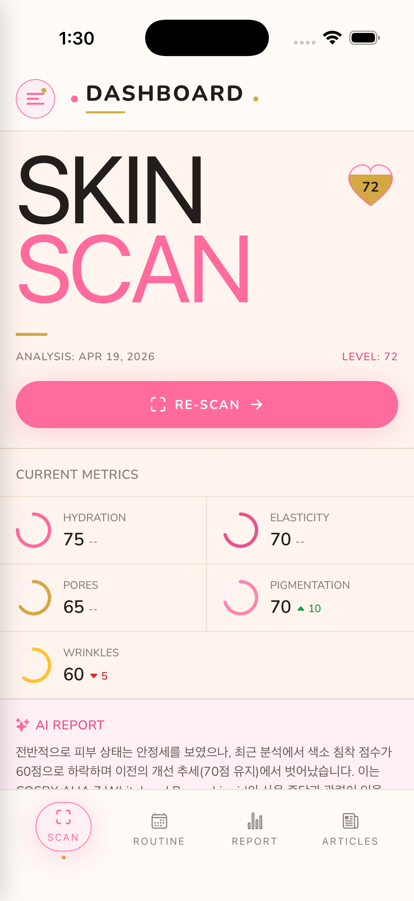
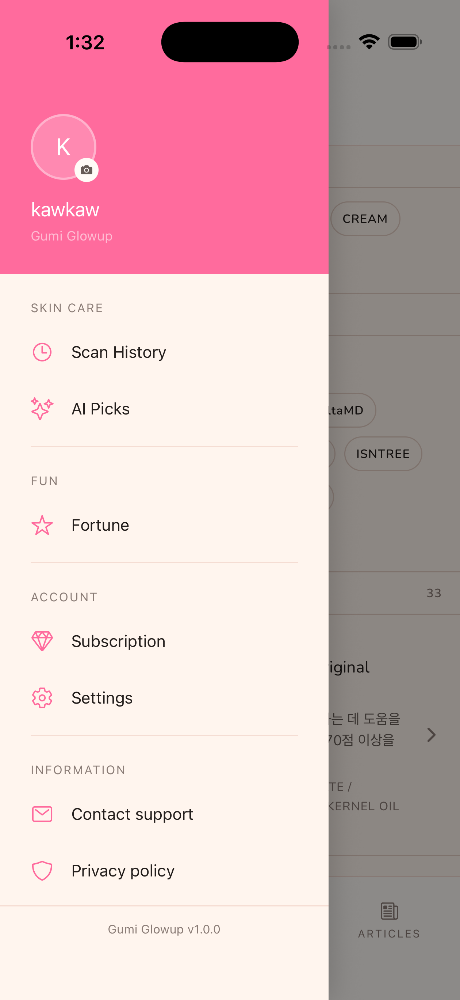
Dashboard summarises your latest skin state. The slide menu opens every feature.
The home screen is your daily anchor. You'll see at a glance:
- Latest skin score & skin age — with a delta vs. your previous scan.
- Continue Glowup banner — if you started a flow (scan → products → routine) but didn't finish, this picks it back up.
- Today's routine progress — AM and PM checkboxes for at-a-glance status.
- Daily fortune card — a small daily moment.
- Subscription banner — trial days remaining, if applicable.
05Skin scan & AI analysis
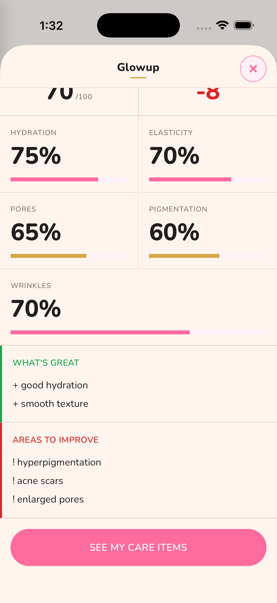
A single selfie produces a five-dimension skin scorecard.
What the AI measures
- Hydration — surface moisture and dryness signals.
- Elasticity — skin firmness cues.
- Pores — visible pore density and size.
- Pigmentation — uneven tone, dark spots, melasma cues.
- Wrinkles — fine lines and texture.
You'll also get an estimated skin age, an overall score (0–100), and lists of strengths and areas to improve.
How accurate is it?
The AI normalises for lighting, exposure, and angle, but a clear, evenly-lit selfie still produces dramatically better results. See section 13 for photo tips.
How often should I scan?
Once a month is the sweet spot. Skin changes are gradual, and monthly cadence keeps trend lines meaningful. The app sends a gentle monthly rescan reminder.
06Reports & history
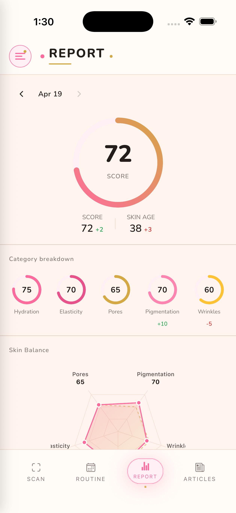
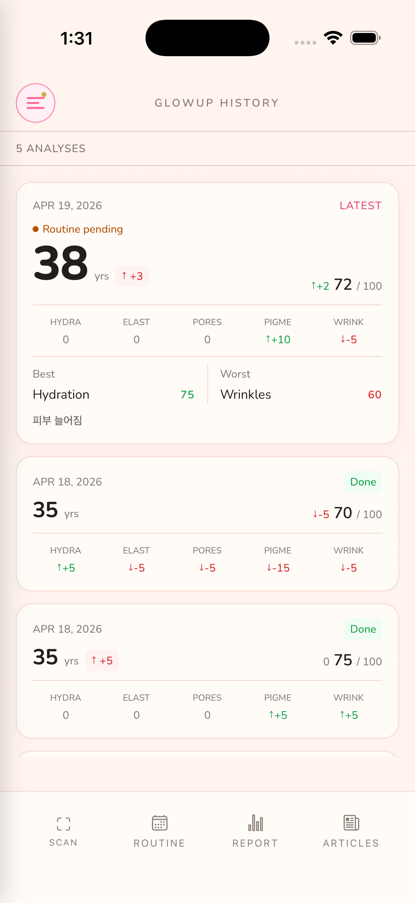
Reports show change over time. History lets you swipe through every past scan.
Every scan you take is saved. The report view turns those scans into useful insight:
- Score trend chart — your overall trajectory across all scans.
- Per-metric direction — which categories are improving or regressing.
- Skin age delta — how much "younger" or "older" your skin looks vs. your real age.
- Product effects — AI-inferred assessment of which products in your routine helped which metric, by comparing before/after scans.
- Routine impact — whether your daily AM/PM consistency is correlating with measurable change.
This is the payoff
The longer you use Gumi Glowup, the richer your report becomes. After three or four scans you'll start seeing patterns no review website can give you — because they're patterns of your own skin.
07AI Picks: product recommendations
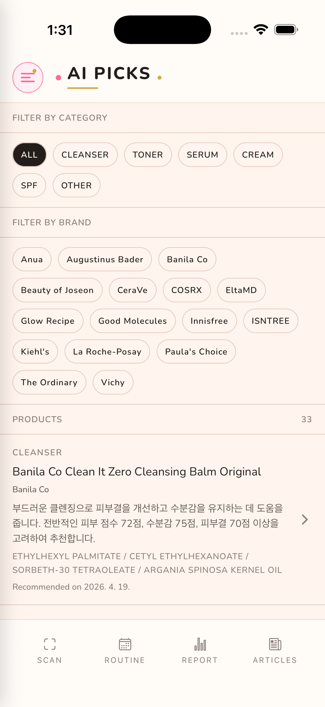
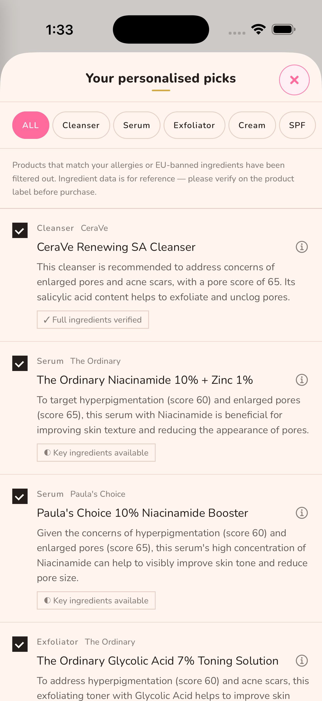
After analysis, AI Picks curates products specifically for your skin state.
How recommendations work
- Each product is selected based on your analysis results, your skin profile (type, concerns, allergens), and your past history.
- Picks are organised by category: Cleanser, Toner, Serum, Cream, SPF, Other.
- Every card shows why this product was chosen for you — not a generic blurb, but reasoning tied to your scan.
- Tap any product for the full detail sheet: brand, key ingredients, full ingredient list (when available), price, and a link to learn more or buy.
How we choose what to show you
We take product safety seriously. Our recommender:
- Filters out anything containing your declared allergens.
- Screens against our internal list of potentially harmful ingredients.
- Prefers well-documented, mainstream skincare products over obscure or unverifiable ones.
Please still read the label
No automated system can guarantee a product is safe for your unique skin. Our filters reduce risk significantly, but they are not a substitute for your own judgement.
- Always read the ingredient list before purchasing or applying — formulations change, batches differ, and labelling can be incomplete.
- Patch-test new products on a small area for 24 hours before full use.
- Stop immediately if you notice irritation, redness, itching, or any unusual reaction, and consult a dermatologist if symptoms persist.
- If you have a diagnosed skin condition, are pregnant, or are using prescription topicals, consult your doctor before adding new products.
Don't like a pick? Re-recommend.
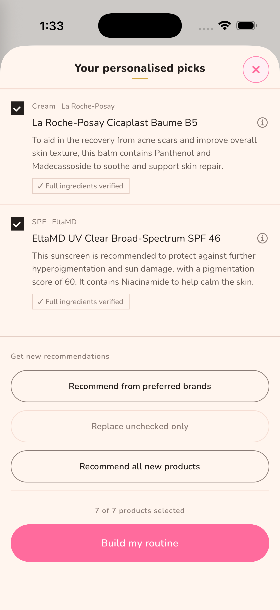
Filter by brand, swap individual items, or generate a fresh set.
You can re-run the recommender three ways: filter to specific brands, replace only the items you don't like, or get a completely new list. Your selections feed back into future picks.
08Routine builder
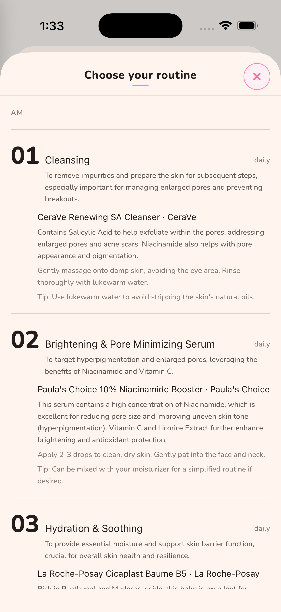
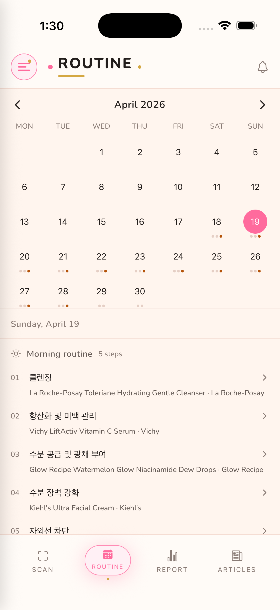
AI generates an AM/PM routine from your picked products, ordered correctly.
Owning the right products is half the battle. Using them in the right order, at the right time, with the right technique is the other half — and that's what Routine handles.
What you get
- AM and PM step lists — products ordered correctly (cleanse → tone → treat → moisturise → SPF).
- Why each step matters — tied to your specific skin concerns.
- How to apply — amount, technique, wait times.
- Frequency notes — daily, alternate days, weekly (e.g., exfoliants, masks).
- Lifestyle tips — sleep, hydration, sun habits relevant to your concerns.
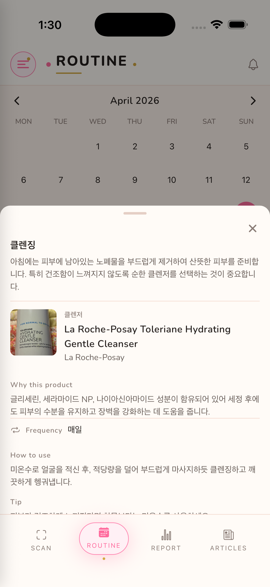
Tap a step to see the product's role, application tips, and frequency.
Reminders & daily tracking
- Set AM and PM notification times that match your real life (defaults: 07:00 / 21:00).
- Optional weekly-care reminders for slow-cadence steps like exfoliants or masks.
- Tick off each step as you go — completion is recorded per day on your calendar so you can see consistency at a glance.
- Consistent application is what produces measurable change in your next scan.
Routine not working? Regenerate.
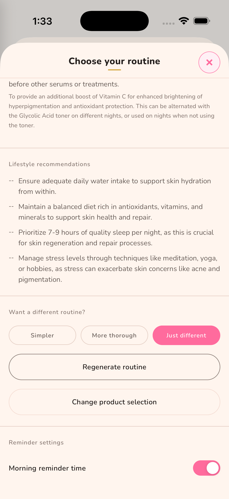
Ask for a simpler, more thorough, or just different routine.
When you regenerate, you can steer the AI with a preference — simpler, more thorough, or just different — so the new routine reflects what didn't work about the last one.
09Knowledge articles
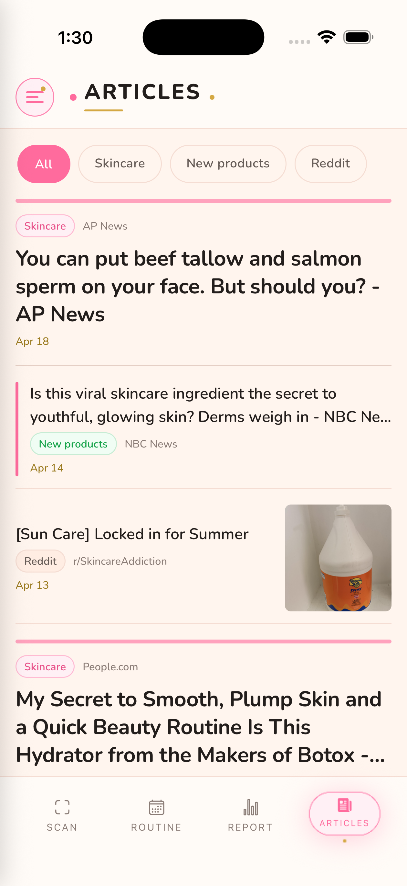
Curated skincare reads — ingredients, trends, community insights.
A curated feed of skincare content: ingredient explainers, new product launches, trending routines, and community discussion. Tap any card to read the full article.
10Daily fortune
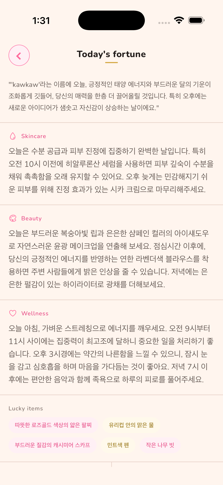
A small daily moment with a personalised skincare tip.
Generated from your name, birthday, gender, and zodiac sign, each daily reading bundles a summary with skincare, beauty, and wellness guidance plus a lucky item, colour, and shape. One reading per day, and the fortune feature is part of the premium subscription.
11Settings & account
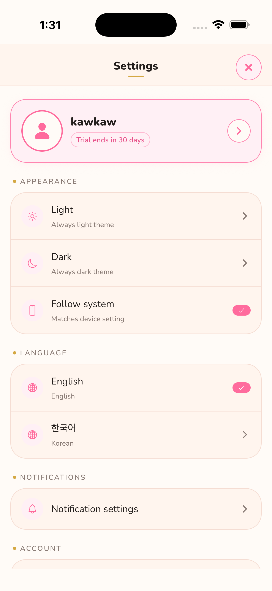
Manage profile, notifications, language, theme, and account from one place.
- Edit profile — update skin type, concerns, allergies any time.
- Subscription — view status, manage via App Store / Google Play.
- Notifications — toggle routine reminders, monthly rescan prompts, fortune alerts.
- Language — switch between supported locales.
- Theme — light, dark, or system.
- Log out / Delete account — sign out keeps your data; delete permanently removes everything.
12Subscription plans
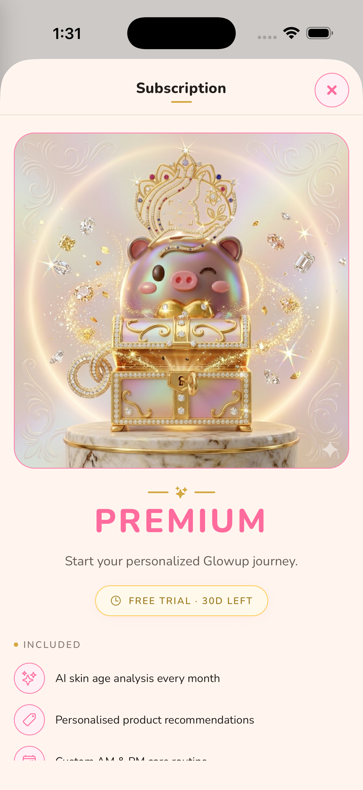
Subscribe via App Store or Google Play. Cancel anytime.
Free
- Browse your profile, history, knowledge feed, and settings
- AI-powered features (analysis, picks, routine, reports, fortune) require an active trial or premium subscription
Premium
From local price / monthly or annual
- AI skin analysis — full scorecard, skin age, and improvement areas
- AI Picks — personalised product recommendations with reasoning
- Routine builder — AM/PM routines, regenerations, and product detail
- Reports & trends — progress over time, product effects, and routine impact
- Daily fortune — personalised skincare fortune, one per day
- New users start with a 30-day trial that unlocks all premium features
Pricing is shown in your local currency on the subscription screen (fetched live from the App Store or Google Play) and can change by region. Subscriptions auto-renew unless cancelled at least 24 hours before the period ends. Manage and cancel anytime from your App Store or Google Play account. Fair-use rate limits apply to AI calls.
13Photo tips, FAQ & contact
Get the best scan
- Lighting — bright, even, natural light. Avoid harsh shadows or backlight.
- Position — face the camera straight, fill the frame, no tilt.
- Cleanliness — remove makeup for the truest reading.
- Stability — hold steady, no motion blur.
- Cadence — once a month so trend lines stay meaningful.
Privacy in one paragraph
Your photos are stored securely and used only to power your analyses. We do not sell your data. We do not use your data to train third-party AI models. You can delete everything from Settings → Delete account. Full details: Privacy Policy.
FAQ
Q. My analysis failed.
Better lighting and a steady hold usually fix it. Remove makeup and face the camera directly. If it keeps failing, try restarting the app.
Q. The recommended product isn't sold in my region.
Use the re-recommend feature to filter by brand or generate a fresh list focused on regionally available products.
Q. I had a reaction to a recommended product.
Stop using it immediately. Add the offending ingredient to your allergens list in Settings so it's filtered from future recommendations. Consult a dermatologist if symptoms persist.
Q. How long until I see a difference in my scans?
Skin turns over roughly every 28 days. Most users start seeing measurable shifts after 1–2 monthly scans of consistent routine use.
Q. Notifications aren't working.
Check both your device's system notification settings and the in-app Settings → Notifications.
Q. Can I cancel my subscription?
Yes, anytime via your App Store or Google Play account settings. You'll keep premium access until the current period ends.
서비스 가이드
구미 글로우업에 오신 걸 환영해요
AI 스킨케어 동반자 — 분석하고, 추천받고, 루틴을 쌓고, 다시 분석합니다.
01Gumi Glowup이란?
Gumi Glowup은 AI 기반 스킨케어 동반자 앱입니다. 셀카 한 장으로 AI가 피부를 5가지 핵심 지표로 평가하고, 안전하고 잘 맞는 제품을 추천해 주며, 실제 피부 상태에 맞춘 데일리 루틴을 만들어 줍니다.
일회성 진단이 아닙니다. 스캔하고, 루틴을 따르고, 추천을 적용할수록 앱은 당신의 피부를 더 정확히 학습하고, 다음 추천을 더 잘 맞춥니다.
02왜 효과가 있을까: 데이터 기반 맞춤화
대부분의 스킨케어 앱은 "여기 제품 목록입니다"에서 멈춥니다. Gumi Glowup은 그 다음을 위해 설계되었습니다 — 지속적으로 학습하는 루프입니다.
글로우업 루프
1. 스캔 — AI가 현재 피부 상태를 측정합니다 (5가지 지표 + 피부 나이).
2. 추천 — 피부 프로필, 고민, 알레르기, 분석 이력을 종합해 제품을 골라줍니다.
3. 루틴 — 추천 제품으로 아침/저녁 루틴이 자동 구성됩니다.
4. 추적 — 데일리 체크인과 월간 재스캔으로 변화 기록이 쌓입니다.
5. 재추천 — 누적된 데이터를 바탕으로 다음 추천이 더 정교해집니다. 오래 쓸수록 똑똑해지는 앱입니다.
왜 이게 중요할까요
- 피부는 계속 변합니다 — 계절, 호르몬, 스트레스, 사용 중인 제품에 따라. 한 번 추천받은 정적인 목록은 금방 낡습니다.
- 효과를 측정할 수 있습니다. 루틴 전후의 스캔을 비교하면 어떤 제품이 당신의 피부에 실제로 효과가 있었는지 알 수 있습니다 — 인터넷 후기가 아니라 본인 데이터로요.
- 꾸준함이 답입니다. 결과는 매일의 작은 케어에서 나옵니다. 스트릭, 알림, 아침/저녁 체크인은 그 꾸준함을 쉽게 만들기 위해 존재합니다.
03최초 실행 & 가입
웰컴 튜토리얼 — Gumi Glowup이 무엇을 하는지 한눈에 보여줍니다.
애플 또는 구글로 로그인하고, 첫 스캔 전에 AI 처리 약관을 검토·동의합니다.
설정하는 항목
- 이름 — 필수.
- 생년월일 — 필수. 오늘의 운세에 쓰이는 별자리도 생년월일에서 자동으로 도출됩니다.
- 피부 타입 — 필수. 1~3개 선택 (건성, 지성, 복합성, 민감성, 트러블, 홍조 등).
- 성별 — 선택.
- 지역/국가 — 선택. 지역에 맞는 추천에 활용됩니다.
- 피부 고민 — 선택. 가장 신경 쓰이는 부분을 자유롭게 적어 주세요 (최대 200자).
- 알레르기 성분 — 선택. 피해야 하는 성분을 표시하면 추천 시 자동으로 제외됩니다.
왜 묻는 걸까요
모든 항목이 AI 추천에 직접 영향을 줍니다. 프로필이 정확할수록 더 안전하고 유용한 추천을 받을 수 있어요. 언제든 설정 → 프로필 편집에서 수정할 수 있습니다.
04홈 대시보드
대시보드는 최신 피부 상태를 요약해서 보여줍니다. 슬라이드 메뉴에서 모든 기능에 접근할 수 있어요.
홈 화면이 매일의 시작점입니다. 한눈에 확인할 수 있는 것들:
- 최신 피부 점수와 피부 나이 — 직전 스캔과의 차이도 함께 표시됩니다.
- "글로우업 이어가기" 배너 — 스캔 → 제품 → 루틴 흐름을 중간에 멈췄다면 이어서 진행할 수 있어요.
- 오늘의 루틴 진행도 — 아침/저녁 체크박스로 한눈에 확인.
- 오늘의 운세 카드 — 매일의 작은 즐거움.
- 구독 배너 — 무료 체험 기간이 남아있다면 표시됩니다.
05피부 스캔 & AI 분석
셀카 한 장으로 5가지 지표 기반의 피부 점수표를 받습니다.
AI가 측정하는 항목
- 수분 — 표면 수분과 건조 신호.
- 탄력 — 피부의 탄탄함.
- 모공 — 보이는 모공 밀도와 크기.
- 색소침착 — 톤 불균형, 잡티, 기미 신호.
- 주름 — 잔주름과 결.
여기에 추정 피부 나이, 종합 점수(0–100), 피부의 강점과 개선이 필요한 영역까지 함께 받습니다.
정확도는 어느 정도인가요?
AI는 조명, 노출, 각도를 보정하지만, 선명하고 균일한 조명에서 찍은 셀카가 훨씬 더 좋은 결과를 만들어냅니다. 촬영 팁은 13번 섹션을 참고하세요.
얼마나 자주 스캔해야 하나요?
한 달에 한 번이 가장 좋습니다. 피부는 천천히 변하고, 월간 주기로 찍어야 변화 추세선이 의미 있게 그려집니다. 앱이 부드럽게 월간 재스캔 알림을 보내드려요.
06리포트 & 분석 이력
리포트는 시간에 따른 변화를 보여줍니다. 분석 이력에서 모든 과거 스캔을 넘겨 볼 수 있어요.
모든 스캔이 저장됩니다. 리포트 화면은 그 데이터를 의미 있는 인사이트로 바꿔 줍니다:
- 점수 추세 차트 — 모든 스캔을 통한 종합 추이.
- 지표별 방향 — 어떤 카테고리가 좋아지고 어떤 카테고리가 나빠지고 있는지.
- 피부 나이 차이 — 실제 나이 대비 피부가 얼마나 "어려" 보이는지.
- 제품 효과 분석 — 전후 스캔을 비교해 어떤 제품이 어떤 지표에 도움이 되었는지 AI가 추정합니다.
- 루틴 영향도 — 아침/저녁 루틴 꾸준함이 측정 가능한 변화로 이어지고 있는지.
바로 이게 핵심 가치예요
오래 쓸수록 리포트가 더 풍부해집니다. 3–4번의 스캔이 쌓이면 어떤 후기 사이트도 알려줄 수 없는 패턴이 보이기 시작해요 — 본인 피부의 패턴이니까요.
07AI Picks: 제품 추천
분석이 끝나면 AI Picks가 당신의 피부 상태에 맞춘 제품을 큐레이션합니다.
추천이 어떻게 만들어지나요
- 각 제품은 당신의 분석 결과, 피부 프로필(타입, 고민, 알레르기), 지난 이력을 종합해 선정됩니다.
- 카테고리별로 정리됩니다: 클렌저, 토너, 세럼, 크림, 자외선차단제, 기타.
- 모든 카드에 이 제품이 왜 당신에게 추천됐는지 표시됩니다 — 일반론이 아니라 본인 스캔 결과와 연결된 이유입니다.
- 제품을 탭하면 상세 시트가 열립니다: 브랜드, 핵심 성분, 전체 성분(가용한 경우), 가격, 자세히 보기/구매 링크.
안전한 제품을 추천하기 위해 들인 노력
제품 안전성에 많이 공을 들였습니다. 추천 엔진은:
- 당신이 등록한 알레르기 성분이 포함된 제품을 자동으로 걸러냅니다.
- 내부 유해 성분 목록에 걸리는 제품을 사전에 제외합니다.
- 출처가 불분명한 제품보다 잘 알려진 주요 스킨케어 제품을 우선합니다.
그래도 성분표는 꼭 확인하세요
어떤 자동화 시스템도 당신의 고유한 피부에 그 제품이 절대적으로 안전하다고 보장할 수는 없습니다. 저희 필터가 위험을 크게 줄여 주지만, 본인 판단을 대체하지는 못합니다.
- 구매 전·사용 전 반드시 성분표를 직접 읽어 보세요. 포뮬러가 바뀌거나, 배치가 다르거나, 표기가 불완전할 수 있습니다.
- 새 제품은 패치 테스트를 먼저 해 보세요. 작은 부위에 24시간 발라보고 반응을 확인합니다.
- 발진, 따가움, 가려움, 홍조 등 이상 반응이 있으면 즉시 사용을 중단하고 증상이 지속되면 피부과 전문의와 상담하세요.
- 피부 질환 진단을 받았거나, 임신 중이거나, 처방 외용제를 사용 중이라면 새 제품 추가 전 의사와 상담하세요.
마음에 안 들면 다시 추천받기
브랜드로 필터링하거나, 일부 제품만 교체하거나, 완전히 새로 받을 수 있어요.
세 가지 방식으로 다시 추천받을 수 있습니다 — 특정 브랜드만, 마음에 안 드는 제품만 교체, 또는 완전히 새로운 목록. 당신의 선택이 다음 추천에 다시 반영됩니다.
08루틴 빌더
선택한 제품으로 AI가 올바른 순서의 아침/저녁 루틴을 자동 생성합니다.
좋은 제품을 가진 건 절반의 성공일 뿐입니다. 올바른 순서, 올바른 시간, 올바른 사용법이 나머지 절반인데, 이걸 루틴 기능이 책임집니다.
받는 것들
- 아침/저녁 단계 목록 — 클렌징 → 토너 → 케어 → 보습 → 자외선차단 순으로 정리.
- 각 단계가 왜 필요한지 — 본인 피부 고민과 연결된 설명.
- 사용법 — 적정량, 바르는 방법, 흡수 대기 시간.
- 빈도 안내 — 매일/격일/주 N회 (예: 각질 제거, 마스크).
- 라이프스타일 팁 — 수면, 수분 섭취, 자외선 습관 등 고민과 관련된 조언.
단계를 탭하면 그 제품의 역할, 사용 팁, 빈도가 자세히 나옵니다.
알림 & 데일리 트래킹
- 본인 생활 패턴에 맞춰 아침/저녁 알림 시간을 설정하세요 (기본값 07:00 / 21:00).
- 각질 제거, 마스크 등 주기가 긴 단계를 위한 주간 케어 알림도 추가할 수 있습니다.
- 각 단계를 완료하면서 체크해 나가면 그날의 수행 여부가 캘린더에 기록되어, 꾸준함이 한눈에 보입니다.
- 다음 스캔에서 측정 가능한 변화를 만드는 건 결국 꾸준한 수행입니다.
루틴이 안 맞으면 다시 추천받기
더 간단하게 / 더 꼼꼼하게 / 전혀 다르게 중에서 방향을 골라 재추천받을 수 있어요.
재추천 시 더 간단하게, 더 꼼꼼하게, 전혀 다르게 중에서 원하는 방향을 선택할 수 있습니다. 이전 루틴에서 안 맞았던 부분이 반영되어 새 루틴이 만들어져요.
09아티클
큐레이션된 스킨케어 읽을거리 — 성분, 트렌드, 커뮤니티 인사이트.
큐레이션된 스킨케어 콘텐츠 피드입니다 — 성분 해설, 신제품 출시, 트렌드 루틴, 커뮤니티 토론. 카드를 탭하면 원문을 읽을 수 있습니다.
10오늘의 운세
매일의 작은 즐거움 + 당신 프로필에 맞춘 스킨케어 팁.
이름, 생년월일, 성별, 별자리를 바탕으로 오늘의 종합 운세와 함께 스킨케어·뷰티·웰니스 조언, 행운의 아이템·컬러·모양이 하루 한 번 제공됩니다. 오늘의 운세는 프리미엄 구독의 일부로 제공됩니다.
11설정 & 계정
프로필, 알림, 언어, 테마, 계정을 한 곳에서 관리하세요.
- 프로필 편집 — 피부 타입, 고민, 알레르기를 언제든 업데이트.
- 구독 — 상태 확인, App Store / Google Play를 통한 관리.
- 알림 — 루틴 알림, 월간 재스캔 알림, 운세 알림 토글.
- 언어 — 지원 언어로 전환.
- 테마 — 라이트, 다크, 시스템.
- 로그아웃 / 계정 삭제 — 로그아웃은 데이터를 보존합니다. 삭제는 모든 데이터를 영구 제거합니다.
12구독 플랜
App Store 또는 Google Play로 구독하세요. 언제든 해지 가능합니다.
무료
- 프로필, 분석 이력, 아티클 피드, 설정 열람
- AI 기반 기능(피부 분석, 제품 추천, 루틴, 리포트, 운세)은 무료 체험 또는 프리미엄 구독 중에만 이용할 수 있어요
프리미엄
현지 가격 기준 / 월간 또는 연간
- AI 피부 분석 — 5가지 지표, 피부 나이, 개선 포인트 제공
- AI Picks — 사유 포함 맞춤 제품 추천
- 루틴 빌더 — AM/PM 루틴 생성·재추천, 제품 상세 안내
- 리포트 & 추세 — 변화 추이, 제품 효과, 루틴 영향도
- 오늘의 운세 — 하루 한 번 맞춤 운세
- 첫 가입 시 30일 무료 체험으로 모든 프리미엄 기능을 경험할 수 있습니다
가격은 구독 화면에서 App Store / Google Play로부터 실시간으로 받아 현지 통화로 표시되며 지역에 따라 다를 수 있습니다. 구독은 이용 기간 종료 24시간 전까지 해지하지 않으면 자동 갱신됩니다. App Store 또는 Google Play 계정 설정에서 언제든지 관리·해지할 수 있습니다. AI 호출에는 공정 이용을 위한 호출 빈도 제한이 적용됩니다.
13촬영 팁, FAQ & 문의
최상의 스캔을 위한 팁
- 조명 — 밝고 균일한 자연광. 강한 그림자나 역광은 피하세요.
- 위치 — 카메라 정면, 얼굴이 프레임에 가득, 기울이지 않기.
- 청결 — 가장 정확한 측정을 위해 메이크업을 지워주세요.
- 안정 — 흔들리지 않게 고정.
- 주기 — 한 달에 한 번이 변화 추세를 의미 있게 만듭니다.
한 문단 개인정보 안내
사진은 안전하게 저장되며 오로지 당신의 분석을 위해서만 사용됩니다. 데이터를 판매하지 않습니다. 제3자 AI 모델 학습에 사용하지 않습니다. 설정 → 계정 삭제에서 모든 데이터를 삭제할 수 있습니다. 자세한 내용: 개인정보처리방침.
자주 묻는 질문
Q. 분석이 실패했어요.
조명을 더 밝게 하고 흔들림 없이 잡으면 대부분 해결됩니다. 메이크업을 지우고 카메라를 정면으로 바라봐 주세요. 계속 실패하면 앱을 재시작해 보세요.
Q. 추천된 제품이 우리 지역에서 안 팔려요.
다시 추천 기능에서 브랜드로 필터링하거나, 새로 추천받아 보세요.
Q. 추천 제품에 트러블이 났어요.
즉시 사용을 중단하세요. 설정에서 해당 성분을 알레르기 목록에 추가하면 다음 추천에서 제외됩니다. 증상이 지속되면 피부과 전문의와 상담하세요.
Q. 스캔에 변화가 보이려면 얼마나 걸리나요?
피부는 약 28일 주기로 턴오버합니다. 대부분의 사용자는 꾸준한 루틴 사용 후 1–2회의 월간 스캔이 쌓이면 측정 가능한 변화를 보기 시작합니다.
Q. 알림이 작동하지 않아요.
기기의 시스템 알림 설정과 앱 내 설정 → 알림을 모두 확인해 주세요.
Q. 구독을 해지할 수 있나요?
네, App Store 또는 Google Play 계정 설정에서 언제든지 가능합니다. 현재 결제 기간이 끝날 때까지 프리미엄 기능을 계속 사용할 수 있습니다.